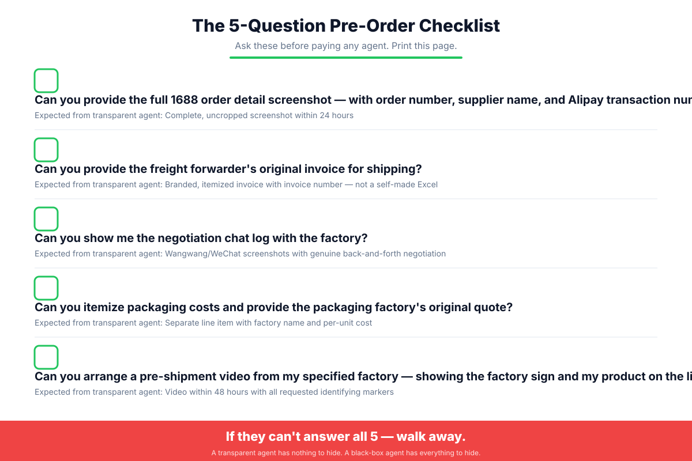

Why This Article Is Different
Here is a truth almost no one in this industry will tell you: most "how to buy from 1688 without a Chinese agent" articles are written by Chinese sourcing agents.
Their business model depends on you deciding that DIY is too hard, too risky, and too time-consuming — and then calling them. Every step they describe is subtly designed to make you feel out of your depth. The payment section emphasizes how impossible it is. The logistics section emphasizes how chaotic it is. The quality section emphasizes how dangerous it is. And at the end, there is always a gentle suggestion: "or you could just work with us."
This article is different.
Milebond is a fee-only sourcing service. We charge a flat, disclosed service fee and nothing else. We do not earn kickbacks from factories. We do not mark up shipping. We do not inflate packaging costs. Because our revenue is fully transparent, we have no reason to make DIY look harder than it is — and every reason to tell you exactly where the industry's hidden money flows.
This guide gives you three things:
- A genuinely executable DIY path — with the exact tools, steps, and community-vetted tricks that actually work.
- Five gray-area tactics that "3% commission" agents use to quietly earn 10–30% on your order — and how to detect each one.
- An honest decision framework for when to do it yourself, when to hire help, and how to tell the difference between a transparent partner and a black box.
If you are sourcing from 1688 for the first time, or if you currently work with an agent and suspect you are being overcharged, this article is for you.
Can You Really Buy From 1688 Without an Agent?
The short answer: yes, for small orders. No, not easily, for production-scale orders.
1. What You Can Actually Do Yourself
These tasks are entirely within reach of a non-Chinese speaker with a browser and some patience:
- Registering an account. 1688 accepts foreign phone numbers for registration. If you already have a Taobao account, the same login works on 1688.
- Browsing and searching. Google Chrome's built-in page translation converts the entire site to English with one right-click.
- Communicating with suppliers. Every 1688 product page has a Wangwang chat button. You can type in English; most suppliers use translation tools. Many product pages list a mobile number linked to WeChat.
- Placing small orders. If the supplier supports Cross-border Pay (跨境宝/KJB), you can pay directly through WorldFirst or Zyla without a Chinese bank account.
For sample orders and trial purchases under $500, this is often enough.
2. The 3 Hard Walls That Stop Most DIY Buyers
At production scale — typically orders above $1,000 — three structural barriers make pure DIY impractical:
The critical point agent-written guides never make: the solution to these walls is not necessarily a commission-based agent. It is transparent payment, logistics, and QC infrastructure — fee-based, not markup-based.
3. The Real Question
The wrong question is: "Should I use an agent or do it myself?"
The right question is: "Whoever handles my order — am I seeing the true factory price, the true shipping cost, and the true supplier, or am I being marked up in the dark?"
An agent who charges 8% transparently and shows you the factory invoice may be cheaper than an agent who charges 3% on paper but embeds 15% in unit price, 40% in shipping, and 60% in packaging. The headline number is meaningless.
The Honest DIY Path: Step by Step
1. Register a 1688 Account (Foreign Phone Works)
Visit www.1688.com on desktop. Click 免费注册 (Register for Free). Enter your mobile number (foreign numbers accepted), verify, and complete registration. Taobao account credentials work directly.
Pro tip: Use Chrome → right-click → "Translate to English" before starting.
→ Full registration guide with screenshots
2. Filter Suppliers: Super Factory, Verified, Real Reviews
Search using Chinese keywords (Google Translate your product name). Use filters:
超级工厂(Super Factory): On-site verified actual manufacturers实力商家(Power Seller): Verified business credentials实地认证(On-site Verified): Third-party physical visit
Check: 回头率 (repeat rate >20% good), 纠纷率 (dispute rate <1%), 开店年限 (3+ years), 响应率 (>90%).
Community trick (Reddit high-voted): Search the shop name + "1688 review" or "1688 scam" on Google and YouTube before ordering.
→ Complete supplier verification guide
3. Communicate & Negotiate
Click Wangwang chat or add supplier's mobile on WeChat. Ask for: price tiers (100/500/1000 pcs), MOQ, lead time, sample cost, Cross-border Pay support.
Beyond lower unit price, ask for: free logo printing, absorbed mold fees, lower defect allowance (2% vs 5%), free upgraded packaging, priority scheduling, price guarantees for repeat orders.
A factory that won't move from $4.00 to $3.80 may still concede $0.30+ in added value.
→ Full negotiation playbook with templates
4. Payment: Cross-border Pay, WorldFirst, Local Channel
Ask every supplier: "Do you support Cross-border Pay / 跨境宝 / KJB?"
- Yes: Pay via WorldFirst World Account (CNH account → authorize through 跨境宝) or Zyla. Payment goes through 1688 escrow.
- No: You need a domestic Chinese payment channel. Options: trusted contact, specialized payment service, or a fee-only buying service that pays domestically with a transparent invoice.
Critical distinction: A payment channel is not a sourcing agent. Don't let an agent conflate the two.
→ Complete payment methods comparison
5. Shipping: Consolidation, Courier vs LCL, Volume-Weight Trap
- Consolidate all supplier orders to one warehouse in Shenzhen or Yiwu. Many forwarders offer free 15-30 day storage. Consolidation cuts shipping 40-60%.
- Express courier (DHL/FedEx/UPS): <200kg, 3-7 days, door-to-door. Use a forwarder's discounted account (30-50% off retail).
- Air freight: 200-500kg, 5-10 days, airport-to-airport.
- Sea LCL: 500kg+ / 1+CBM, 20-40 days, most economical.
- Sea FCL: 15+CBM, full container.
Volumetric weight formula: L(cm) × W(cm) × H(cm) ÷ 5000 = volumetric kg. Chargeable weight = greater of actual vs volumetric. Large light products ship at 3-5× actual weight.
→ Shipping cost calculator guide
6. Quality Control: Sample, Live Video, Third-Party Inspection
- Always order a sample first ($10-50 + shipping, often refunded on bulk order).
- Request 60-second unedited live video before production: factory floor, raw materials, production line, product close-up with measurement. Not a pre-recorded promo video.
- Hire third-party pre-shipment inspection for orders >$2,000: SGS, AsiaInspection, QIMA — $150-300/man-day.
- Specify quality requirements in writing: materials, dimensions with tolerances, Pantone colors, packaging, labeling, acceptable defect rate (2-3%).
→ Complete QC checklist with inspection guide
The 5 Gray Areas: Where "3% Agents" Actually Make Their Money

This is the section agent-written guides never include.
If an agent charges "only 3% commission," ask: 3% of a $5,000 order is $150. Is that enough to run a business, pay staff, maintain a warehouse? For most agents, no. The 3% is what they disclose. The real profit comes from the five gray areas below.
Industry audits and buyer community reports consistently find hidden markups of 10-30% of total order value, on top of the disclosed fee.
1. Photoshopped Payment Totals
How it works: Agent orders at ¥20,000, sends you a screenshot showing ¥23,000. The extra ¥3,000 (15%) is pocketed. The screenshot may be a real 1688 page with the amount edited, or fully fabricated.
How to detect:
- Demand the full 1688 order detail page — with order number (订单号), supplier shop name, order time, payment method, Alipay transaction number (支付宝交易号). A cropped "payment successful" image is a red flag.
- Cross-reference with the supplier directly. Contact the factory, give the order number, ask them to confirm the total paid.
- Check for editing artifacts. Zoom in on the amount field — mismatched fonts, pixel density, background texture around numbers.
Impact: 10% markup on a $5,000 order = $500. On $20,000 = $2,000. Annually = $10,000-30,000 for a mid-size importer.
→ Full deep-dive with before/after examples
2. Overcharged Shipping
How it works: Agent quotes "all-in" shipping at 1.5-3× actual cost. Real courier cost $800, agent charges $1,800. $1,000 pure profit. Justifications: "special line rate," "includes customs," "peak season surcharge" — none itemized or verifiable.
This is the #1 complaint across Reddit, Facebook importer groups, and Trustpilot. "Shipping cost more than the products" appears in nearly every agent scam thread.
How to detect:
- Get actual weight and dimensions. Carton count, each carton L×W×H (cm), total actual weight (kg).
- Calculate volumetric weight yourself.
L×W×H ÷ 5000. Chargeable = greater of actual vs volumetric. - Compare against published rates. DHL/FedEx/UPS website quote = retail ceiling. 2-3 independent forwarder quotes = market floor.
- Demand the forwarder's original invoice. Branded, itemized, with invoice number. A self-made Excel "shipping: $X" is a markup.
Impact: Often the largest single hidden cost. For volumetric-heavy products, agents charge 200%+ of true freight. A $2,000 product order can carry $1,500 in inflated shipping.
→ Shipping audit toolkit with rate comparison template
3. No Real Negotiation
How it works: Agent says "I negotiated down to $4.20/unit" but actually copied the 1688 listing price. Or the factory offered $3.80 for your quantity, agent reports $4.20, keeps $0.40/unit.
The conflict of interest: If agent commission is a % of order value, a lower price = lower commission. They have a direct financial disincentive to negotiate aggressively. Commission-based agents never disclose this.
How to detect:
- Check the 1688 listing price yourself first. If agent's "negotiated" price = listing price, they didn't negotiate.
- Request the negotiation chat log. Wangwang/WeChat screenshots showing genuine back-and-forth. A log with one message or unnaturally clean exchange is fabricated.
- Contact the factory yourself. Add their WeChat, ask for a quote at the same quantity, compare.
- Ask for volume-tier pricing. Factories offer 5-20% off for larger quantities. If your order exceeds MOQ, the agent should secure a volume discount.
Impact: 2,000 units × $4.20 = $8,400. A 10% unnegotiated discount = $840 lost. More importantly, you're paying commission for a service never performed.
→ Negotiation verification guide with chat log authenticity checklist
4. Inflated Packaging & Add-On Fees
How it works: You request custom color boxes. Agent quotes $0.50/unit. Actual factory cost $0.20/unit. Agent pockets $0.30.
The mechanism: If agent charges 5% of total order value, and total includes packaging, then higher packaging = higher commission. The agent is incentivized to inflate every add-on — packaging, labeling, mold fees, testing, compliance certificates — because each increases both the hidden markup AND the disclosed commission.
Industry audits found packaging markups up to 60% above factory charge. One case: agent quoted $0.08/box, factory produced for $0.05 = 60% markup hidden in "standard" commission.
How to detect:
- Demand itemized packaging costs. Separate line item with packaging factory name, original quote, per-unit cost. Not bundled into unit price.
- Get independent packaging quotes. Search 1688 "彩盒定制" or "包装印刷", contact 2-3 factories, compare.
- Know the market range (standard 350gsm color box, 4-color, matte lamination):
- 500 units: $0.15-0.30/box
- 1,000 units: $0.10-0.20/box
- 5,000 units: $0.05-0.12/box
- Beware "mandatory upgrades." "Factory requires upgraded packaging for export" or "customs demands reinforced cartons" — often fabricated. Verify with the factory directly.
Impact: 5,000 units × $0.15 markup = $750. With compounding commission on inflated total, true cost ~$800-900. For electronics/cosmetics/gifts, packaging can be 10-20% of order value.
→ Packaging cost market benchmark with self-sourcing guide
5. Switched Suppliers, Photoshopped as Your Choice
How it works: You select Supplier A (sample verified, trusted). Agent agrees. In reality, agent orders from Supplier B — cheaper, unknown to you — and edits the 1688 order screenshot to show Supplier A's name.
Why: Supplier B pays a higher kickback (10-30% of order value) or offers a lower price the agent can markup. Supplier A may be more expensive or refuse kickbacks. The agent's loyalty is to the factory that pays most, not you.
Result: You receive goods from a factory never selected, with quality never verified. If quality is poor, you blame Supplier A. The "proof" shows Supplier A, so you have no evidence.
How to detect:
- Pre-shipment factory video with identifying markers. Must include: (a) factory exterior sign with company name, (b) production line with your product, (c) worker holding paper with your name + order number, (d) pan shot of factory floor. A video from Supplier B won't show Supplier A's sign.
- Verify shipping origin address. Tracking number origin city/district vs Supplier A's address on their 1688 shop page. Different city = switched.
- The name-in-the-box trick. Ask Supplier A directly (your own channel, not through agent) to put a paper with your name/code inside one carton. If not found when goods arrive, it didn't come from Supplier A.
- Compare to approved sample. Document sample with detailed photos (stitching, material, logo, print, packaging). Compare random bulk units. Subtle differences = different factory.
- Request factory sales contact. Get name + WeChat of Supplier A's salesperson. Add them, ask "Did you produce order [number] for [product]?" No record = switched.
Impact: Undermines the entire sourcing process. You spent weeks verifying Supplier A, receive goods from an unknown factory. Defect rates, material substitutions, compliance failures all significantly higher. Extreme cases: counterfeit or non-compliant goods unsellable in your market.
→ Full supplier-switch investigation guide with 6 forensic methods
The 5-Question Pre-Order Checklist (Print This)

Before paying any agent, ask these five questions. If any can't be answered clearly, or they deflect with "trust me, we've been doing this for years" — find another agent.
| # | Question | Transparent Agent Does | Black-Box Agent Does |
|---|---|---|---|
| 1 | "Full 1688 order detail screenshot with order number, supplier name, Alipay transaction number?" | Sends complete uncropped screenshot within 24h | Sends cropped "payment successful" image or delays |
| 2 | "Freight forwarder's original invoice for shipping?" | Forwards branded itemized invoice with invoice number | Sends self-made Excel "shipping: $X" no documentation |
| 3 | "Negotiation chat log with the factory?" | Provides Wangwang/WeChat screenshots with genuine back-and-forth | "We negotiated verbally" or log with one/two messages |
| 4 | "Itemized packaging costs with packaging factory's original quote?" | Separate line item with factory name and per-unit cost | Bundles into unit price or quotes round number no breakdown |
| 5 | "Pre-shipment video from my specified factory showing factory sign and my product on the line?" | Coordinates video within 48h with all identifying markers | "Factory doesn't allow videos" / "not necessary" / sends promo video |
→ Download printable PDF with acceptable-answer criteria
Decision Matrix: DIY vs Black-Box Agent vs Fee-Only Service
| Dimension | Pure DIY | Black-Box Agent ("3%") | Fee-Only Transparent Service |
|---|---|---|---|
| Best for | Samples, trials under $500 | — (never optimal) | Production orders $1,000+ |
| Payment | Self-managed via KJB or local contact | Agent pays; amount may be photoshopped | Agent pays; factory original invoice provided |
| Negotiation | You negotiate directly | May not negotiate; has disincentive | Chat log provided; verified |
| Shipping | You find own forwarder | Often overcharged 1.5-3× | Forwarder original invoice forwarded |
| Quality control | You arrange third-party inspection | May be superficial or skipped | Inspection photos/videos provided |
| Supplier integrity | You choose and verify | May switch without disclosure | Specified supplier guaranteed; video verified |
| Time cost | High (10-20+ hrs/order) | Low | Low |
| True total cost | Product + shipping + your time | Product + 10-30% hidden markup + disclosed fee | Product + shipping + transparent service fee only |
| Verifiability | Full | Low | Full |
Bottom line:
- Under $500 + time to learn → DIY.
- $1,000+ + want to focus on product → transparent fee-only service that shows factory invoice, forwarder bill, negotiation record.
- Black-box "3%" agent is the most expensive option. The 3% is the tip. Real cost is buried in the five gray areas.
→ Real-order cost comparison: $10,000 order through all three channels
The Milebond Transparency Promise
Milebond was founded on a simple principle: sourcing services should be paid for with a disclosed fee, not financed through hidden markups.
With every order we deliver:
- Original 1688 order screenshot — complete, uncropped, with order number, supplier name, payment time, Alipay transaction number.
- Factory's original quote or invoice — the factory's own document, not a consolidated quote we created.
- Negotiation chat log — Wangwang/WeChat screenshots showing actual price negotiation. You see what we asked, what they countered, what was agreed.
- Freight forwarder's original invoice — actual bill with logo, invoice number, itemized charges. Forwarded at cost. Zero markup on shipping.
- Itemized add-on costs — packaging, labeling, mold, testing, compliance — all separate line items with supplier's original quote.
- Supplier integrity guarantee — specified supplier = actual supplier. Pre-shipment video from that factory with company sign and your product on the line. Never switch without your explicit written approval.
Our fee is 5% of factory product value. That is our only revenue. No kickbacks. No shipping markup. No inflated add-ons.
Our guarantee: If you discover Milebond engaged in any of the five gray-area tactics — photoshopped payments, overcharged shipping, fake negotiation, inflated packaging, supplier switching — we refund 100% of our service fee for that order. No questions, no excuses.
→ Get a free, no-obligation cost breakdown for your next 1688 order
FAQ
Can I pay 1688 with a credit card or PayPal?
No. 1688 does not accept international credit cards or PayPal directly. The platform primarily supports Alipay (Chinese bank account) and domestic bank transfers. If a supplier has enabled Cross-border Pay (KJB), you can pay through WorldFirst or Zyla, which accept international funding and settle in CNY through 1688's escrow system. If your supplier doesn't support KJB, you need a domestic Chinese payment channel or a fee-only buying service.
→ Complete guide to paying 1688 without a Chinese bank account
How much does a transparent sourcing service actually cost?
Transparent fee-only services typically charge 3-8% of factory product value, depending on order size and complexity. Small orders (<$2,000) may have a minimum fee ($100-200/order). Large repeat orders may qualify for 3-5%. The key isn't the percentage but whether it's the provider's only revenue. An 8% transparent service can cost less overall than a 3% service embedding 15% in product, 50% in shipping, 40% in packaging. Always calculate total landed cost.
→ 2026 transparent sourcing fee benchmark
How do I verify an agent isn't marking up my order?
Use the five verification methods: (1) demand full 1688 order detail screenshot with order number, cross-reference with supplier; (2) obtain forwarder's original invoice, compare against independent quotes; (3) request negotiation chat log, verify "negotiated" price is below 1688 listing; (4) require itemized packaging with original quotes, compare against independent 1688 packaging quotes; (5) verify supplier integrity via pre-shipment factory video, shipping origin address, name-in-the-box technique. If an agent resists any verification request, that resistance is the answer.
→ Step-by-step agent invoice audit guide
What if my supplier won't accept Cross-border Pay?
Options: (1) Find an alternative supplier for the same product that supports KJB — filter on 1688 or ask during sourcing; (2) Use a specialized cross-border payment service providing Chinese domestic payment rails; (3) Work with a fee-only buying service that pays domestically and provides the factory's original invoice. Critical: don't let an agent use "supplier doesn't accept KJB" as justification for opaque pricing. A payment channel is a commodity with known cost, not a reason to hide markups.
→ Solutions for suppliers without Cross-border Pay
Can I use a freight forwarder separately from my buying agent?
Yes, and in many cases you should. A separate forwarder gives independent shipping cost verification and eliminates markup. Process: (1) agent ships goods to your forwarder's China consolidation warehouse; (2) forwarder consolidates, weighs, measures, ships internationally; (3) forwarder bills you directly with itemized invoice. This separation means agent handles sourcing/payment/QC, forwarder handles logistics — each accountable to you. Most forwarders offer free 15-30 day consolidation storage. If your agent discourages using your own forwarder, ask why — a transparent agent has no reason to object.
→ Guide to separating freight forwarding from buying agent
What should I do if I suspect my agent switched suppliers?
Take these steps immediately: (1) Stop further payments — don't pay the balance; (2) Compare received goods to approved sample, document differences with photos; (3) Check shipment origin address on tracking vs supplier's 1688 address; (4) Contact specified supplier directly (your own Wangwang/WeChat, not through agent), ask if they produced your order; (5) If supplier confirms no record, you have evidence. Confront agent with evidence, demand full refund or re-production at correct factory. If refused, document everything and report to platforms, payment providers, business registries. Future: always require pre-shipment factory video with identifying markers before paying balance.
→ Supplier-switch response playbook with evidence preservation steps
Conclusion
Buying from 1688 without a Chinese agent is possible — for small orders, with the right tools, and willingness to learn. But for production-scale sourcing, the three hard walls of payment, logistics, and quality control mean most buyers benefit from a partner on the ground in China.
The question is not whether to work with a partner. The question is whether that partner earns transparently — through a disclosed service fee — or opaquely, through photoshopped payments, overcharged shipping, fake negotiation, inflated packaging, and supplier switching.
The five gray areas are not rare exceptions. They are standard operating procedure for a significant portion of the sourcing agent industry. Agents profit from your lack of access, language barrier, and trust. This article removes all three.
You now have:
- A complete DIY path executable today
- Five detection methods for the industry's most common hidden profit tactics
- A five-question checklist filtering 90% of black-box agents in your first conversation
- A decision framework for DIY vs black-box vs transparent fee-only
Use this knowledge. Audit your current agent's next invoice. Ask the five questions. If they pass, you've found a rare honest partner. If they don't, you now know exactly what to look for.
At Milebond, we invite you to test us against every standard in this article. Request a cost breakdown. Ask for the factory invoice. Demand the forwarder bill. We deliver all of it — because our fee is the only thing we earn, and we're proud of that.
Get Your Free, No-Obligation 1688 Cost Breakdown
Tell us what you're sourcing. Within 24 hours we'll show you the factory price, the true shipping cost, and our transparent fee — itemized line by line.
Get Started TodayHave you ever caught an agent in one of these five gray areas? Share your story in the comments — we read every one, and your experience could help another buyer avoid the same trap.
About Milebond
Milebond is a fee-only sourcing service helping international buyers source from 1688 and Chinese factories with full transparency. We charge a disclosed service fee and provide the original factory invoice, forwarder bill, and negotiation record with every order. Learn more about our transparency promise →